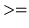
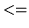

(E0 261) Database Management Systems
MINIREL Project Description
In this project, you will implement a simplified single-user relational
database system, called MINIREL. The MINIREL project involves
writing code for both the logical layer and the physical layer of the
dbms. For ease of implementation, the logical layer is split into two
sub-layers, an algebra layer and a schema layer. Therefore, the
MINIREL architecture is a three-layer hierarchy comprised of an Algebra Layer, a Schema Layer and a Physical Layer. Your
implementation will have to reflect this hierarchy.
The Algebra Layer implements the main relational algebra constructs
such as select, project, etc. The Schema Layer
implements routines that define and manipulate the database schema.
Utility routines for manipulating relations are also included in this
layer. The Physical Layer implements routines which directly
manipulate files and records through the operating system interface.
The meta-data information is stored in catalogs.
You will implement MINIREL bottom-up, that is, starting with
the Physical Layer, then writing the Schema Layer, and finally, the
Algebra Layer. We will provide a front-end to translate user
dbms commands into calls to MINIREL. This front-end will parse the
dbms commands and call routines of your Algebra Layer and Schema Layer
to process each command. During program development, you should use
the front-end for writing queries to test the correctness and
robustness of your programs.
MINIREL is to be implemented in C or C++ on the Unix operating
system. You can develop the program on any machine you like
but your final demo will have to execute on a Linux box.
To help pace yourself on the MINIREL project,
the following 12-week schedule is recommended:
| Project Design: |
one week |
| Physical Layer: |
three weeks |
| Schema Layer: |
two weeks |
| Algebra Layer: |
two weeks |
| Index Routines: |
three weeks |
| Testing: |
one week |
You are expected to hand in a fully commented listing for each layer of
your program. A documentation template and a sample documentation is
available in the course account. Similarly, sample dbms command files
are available for testing the correctness and robustness of your
programs. After project completion, each team will have to provide an
online demo.
The project is worth 40 percent of your final course grade. Of
this, less than half is for program correctness -- the remaining
is for documentation, style, efficiency, and robustness,
so you should write quality code. Typically, the team
grade will simply be assigned to each team member. However, in
cases where the work distribution is noticeably skewed, we will
adjust your individual grades accordingly. Since questions on the
project may appear in the exams and during the demo, make sure that
you are familiar with the entire code. Copying of code across
teams will instantly result in all concerned failing the
course, so it is your responsibility to prevent others from accessing
your code.
This section describes the front-end system (which we will provide in
both C and C++ for a variety of architectures) and the set of commands
that can be input by users to the front-end. The front-end consists of
a parser which parses user commands and converts them to calls
to your logical layer (Algebra Layer + Schema Layer) routines. The
parser uses the standard (argc, argv) technique to pass
parameters to your procedures. All parameters passed into your
routines are in ASCII (character string) form, so they have to be
converted to the appropriate types before processing. You must
stick to the procedure call interface specified for the logical layer
routines in Sections 3 and 4 in order to be able to use the front-end
system.
The front-end verifies the syntactic correctness of user
requests. However, the front-end has no knowledge about what relations
exist, what attributes the relations contain, or the types of their
attributes. Therefore, your routines must detect and deal with the
possibility that incoming requests may make incorrect references to
relations and attributes. It is up to your routines to do all
of the semantic error detection and handling. Ideally, you should
detect all semantic errors before you make any changes to the database,
as undoing such changes will be harder than preventing them in the
first place. Also, you should enforce meta-data security, that is, not
allow users to directly alter the catalogs. Finally, your routines
should return an error code and print out meaningful error
messages when errors do occur.
The commands that MINIREL users can input to the front-end are listed
below. The syntax of the commands is explained in the notes following
the command list.
- createdb DBNAME;
- destroydb DBNAME;
- opendb DBNAME;
- closedb;
- quit;
- create RELATION_NAME ( ATTR_NAME = FORMAT [ , ATTR_NAME = FORMAT ]* );
- destroy RELATION_NAME;
- load RELATION_NAME from FILENAME;
- print RELATION_NAME;
- buildindex for RELATION_NAME on ATTR_NAME;
- dropindex for RELATION_NAME [ on ATTR_NAME ];
- select into RELATION_NAME from RELATION_NAME where ( ATTR_NAME OP VALUE );
- project into RELATION_NAME from RELATION_NAME ( ATTR_NAME [ , ATTR_NAME ]* );
- join into RELATION_NAME ( RELATION_NAME . ATTR_NAME, RELATION_NAME . ATTR_NAME );
- insert into RELATION_NAME ( ATTR_NAME = VALUE [ , ATTR_NAME = VALUE ]* );
- delete from RELATION_NAME where ( ATTR_NAME OP VALUE );
NOTES
- All lower case words are key words.
- The upper case words have the following interpretation:
| RELATION_NAME |
- |
string |
| ATTR_NAME |
- |
string |
| DBNAME |
- |
string |
| FORMAT |
- |
string |
| FILENAME |
- |
string |
| VALUE |
- |
quoted string or number |
| OP |
- |
comparison operators like ,  etc. |
where
- string:
- a character set that starts with an alphabet
and is followed by an
arbitrary number of alphabets and digits
- quoted string:
- a string within double quotes (semicolon is
not allowed within the quotes)
- number:
- integer or real number
- operators:
- , , , , ,
- All the strings and numbers passed to the routines are in ASCII
except the comparison operators which are integer constants.
They are as follows:
| OP |
CONSTANT |
|
501 |
|
502 |
|
503 |
|
504 |
|
505 |
|
506 |
- Terms within square brackets `[ ]' are optional. A `*' after the right
square bracket `]' means terms within the square brackets `[ ]' can be
repeated any number of times.
- All commands to the front-end must end with a `;'.
This section of the handout describes the routines for the Algebra
Layer of MINIREL, and how they are invoked by the front-end. Each of
the Algebra Layer routines implements a basic relational algebra
command. The commands are select, project, join, insert, and
delete. Each of these routines takes one or two relations as
the input and yields a new relation as its result. Result relations are
included in the database.
- Select(argc, argv):
argv[0] = ``select''
argv[1] = result relation
argv[2] = source relation
argv[3] = attribute name
argv[4] = operator
argv[5] = value
argv[argc] = NIL
This routine implements the relational selection command. It first
creates a result relation with the same set of attributes as the source
relation. It then applies the selection criterion to the records in
the source relation, and places the selected records in the result
relation. In MINIREL, only one selection criterion is handled at a
time. The selection criterion itself is specified via the name of an
attribute, a comparison operator, and a value. The supported operators
are , , , , ,
and ; as described in Section 2, the operators are passed
to MINIREL by the front-end as integers.
- Project (argc, argv):
argv[0] = ``project''
argv[1] = result relation
argv[2] = source relation
argv[3] = attribute name 1
argv[4] = attribute name 2
. . . . . .
argv[argc-1] = attribute name N
argv[argc] = NIL
This routine implements the relational projection command. It first
creates the result relation with the attributes given in argv,
then performs the projection. Attributes are matched up by name, not
by position, and the order of attributes in the result relation is the
order specified in argv. Since eliminating attributes may
introduce duplicate tuples, your implementation must ensure that the
duplicates are removed from the output relation.
- Join(argc, argv):
argv[0] = ``join''
argv[1] = result relation
argv[2] = source relation 1
argv[3] = attribute name 1
argv[4] = source relation 2
argv[5] = attribute name 2
argv[argc] = NIL
This routine implements the relational join command. For simplicity,
MINIREL only implements natural join, not the full join
command. This routine first creates the specified result relation,
then performs a join on the two source relations based on either the nested loops technique or the index join technique.
Since natural join is implemented, the join attribute appears only
once in the result relation. The join attribute from the
first source relation is used as the result's join attribute. The
result relation's attribute order is: source 1 attributes
(including the join attribute) followed by source 2 attributes.
While joins on unlike field types (e.g., an integer field and a
string field) are errors, strings of different lengths are accepted
as being of the same type for the purpose of performing joins.
Finally, you must deal with the possibility that the two source
relations may have one or more attributes with the same name --
devise an attribute renaming scheme to resolve such conflicts.
Note, however, that the join attribute should not be renamed.
- Insert(argc, argv):
argv[0] = ``insert''
argv[1] = relation name
argv[2] = attribute name 1
argv[3] = attribute value 1
. . . . . .
argv[argc-2] = attribute name N
argv[argc-1] = attribute value N
argv[argc] = NIL
This routine implements the relational insert command, adding the
tuple given in argv to the named relation. Since the input
values are in ASCII, the appropriate conversion is performed before
entering into the database. Attributes are matched up by name,
not by their order. The length of incoming string-type data is
regulated by padding with NULLs if too short, or truncating if too
long. Make sure that adding the tuple does not introduce a duplicate.
If the attribute set is incorrectly specified, an error message
should be generated.
- Delete(argc, argv):
argv[0] = ``delete''
argv[1] = source relation
argv[2] = attribute name
argv[3] = operator
argv[4] = value
argv[argc] = NIL
This routine implements the relational delete command. It is similar
to Select, but it deletes the specified records from the source
relation instead of placing them in a result relation. You should be
able to implement this routine quickly by copying your Select
code and then making a few changes to it.
Note: If appropriate indexes exist, MINIREL
should use them to process the above operations efficiently.
In the Schema Layer, MINIREL implements routines that form part of
the logical layer and deal with schema definition and manipulation.
Utility routines for printing the contents of relations, loading
relations from binary data files, and building indexes on relations,
are also included in this layer. This section describes each of
the routines in the Schema Layer. Each routine is called by the
front-end or by Algebra Layer routines with (argc, argv)
parameters (as in the Algebra Layer).
- CreateDB(argc, argv):
argv[0] = ``createdb''
argv[1] = database name
argv[argc] = NIL
This routine creates a new database. It creates the relation and
attribute catalogs and loads them with the appropriate initial
information. You should check that the given database directory does
not already exist.
- DestroyDB(argc, argv):
argv[0] = ``destroydb''
argv[1] = database name
argv[argc] = NIL
This routine first checks that the database has been closed.
If it is not closed, it closes it and then destroys the database.
Note: Only the files and directories related to the specified database
should be destroyed, without affecting other databases.
- OpenDB(argc, argv):
argv[0] = ``opendb''
argv[1] = database name
argv[argc] = NIL
This routine opens a database for subsequent use. It changes the
working directory to be the database directory, opens the catalogs and
initializes the various global data structures that are used by other
MINIREL routines.
- CloseDB(argc, argv):
argv[0] = ``closedb''
argv[argc] = NIL
This routine closes the currently opened database and changes
the working directory to the original directory from which MINIREL
was invoked.
- Quit():
argv[0] = ``quit''
argv[argc] = NIL
This routine first checks that the database has been closed. If
it is not closed, it closes it and then terminates the programs.
Note: For CreateDB, DestroyDB, and OpenDB, assume that the full path
name is given in the database name parameter. At the end of the query
interaction, your program should return
to the directory from which you invoked MINIREL.
- Create(argc, argv):
argv[0] = ``create''
argv[1] = relation name
argv[2] = first attribute name
argv[3] = first attribute format
. . . . . .
argv[argc-2] = Nth attribute name
argv[argc-1] = Nth attribute format
argv[argc] = NIL
This routine creates a new relation with the specified name and
attributes. Relation names and attribute names should not be more than
20 characters long (including the NULL that terminates them), and you
must enforce this. The format for each attribute is one of three --
``i'' for integer, ``f'' for floating point, or ``sN'' for character
string of maximum length N (where N is a string of digits). The upper
bound on N is 50. It is an error to create a relation that already
exists.
The routine creates a Unix file for the relation and makes appropriate
entries in the catalogs. It adds a record to the relation catalog
describing the new relation, and adds records to the attribute catalog
for all the attributes of the new relation.
- Destroy(argc, argv):
argv[0] = ``destroy''
argv[1] = relation name
argv[argc] = NIL
This routine removes the specified relation from the database.
Information about the relation is removed from the catalogs as well,
and the associated Unix file is deleted.
- Load(argc, argv):
argv[0] = ``load''
argv[1] = relation name
argv[2] = data file name
argv[argc] = NIL
This routine loads the specified relation, which must already have been
created, with data from the specified file (the full path name of the
file will be provided). Data files are in binary
format as a sequence of data records -- the difference between a data
file and a relation is that the data file has nothing in it except the
data itself, whereas a relation has additional page structure (for
example, the slot maps). The sizes and types of the fields of the
incoming records are ascertained by consulting the catalog information
for the relation being loaded. It is an error to attempt to
load data into a relation that is not empty. You may assume that the
input file will not contain duplicate tuples.
- Print(argc, argv):
argv[0] = ``print''
argv[1] = relation name
argv[argc] = NIL
This routine prints out the contents of the specified relation in the
form of a table. The attribute values must be printed in a
nice formatted way.
- BuildIndex(argc, argv):
argv[0] = ``buildindex''
argv[1] = relation name
argv[2] = attribute name
argv[argc] = NIL
This routine creates a B+ tree index on the given attribute
for the specified relation. To simplify the implementation,
it is required that the desired indexes on a relation be
created before any tuples are loaded. That is, the BuildIndex
command should appear before the corresponding Load command.
- DropIndex(argc, argv):
argv[0] = ``dropindex''
argv[1] = relation name
argv[2] = attribute name
argv[argc] = NIL
This routine destoys the index on the given attribute for the
specified relation. If no attribute name is specified, the
routine destroys all the indexes existing on the relation.
The Physical Layer consists of routines that manage files of records,
since each relation in the database is stored as a file. This
section describes the structure of files and records, and the
meta-data catalogs.
For this project, all the records in each file have the same size.
(Different files may have different record sizes, of course.) In
MINIREL, files and records are implemented in the following manner:
All files are structured as Unix files and each file consists of a
number of pages depending on the number of records in the relation.
Each page has several control fields plus a sequence of slots for
storing records. The control fields include a slot use map,
with one bit per record slot, indicating whether each slot is ``in
use'' (has a record stored in it) or ``free'' (has no record currently
stored in it). Record identifiers (RID's) are represented as 4-byte
values -- the upper 2 bytes are the page number and the lower 2 bytes
are the record slot number within the page. A page identifier is
represented as a RID with a nil (0) value in its record number portion,
and nil page identifiers have 0's in both portions. The actual number
of records per page depends on how the relation's record size compares
to the size of a page. MINIREL uses PAGESIZE = 512 as the
operating assumption. Records should not cross page boundaries.
A relational database has a number of catalogs that are used for
storing meta-data information about relations, attributes, secondary
indexes, views, user access privileges, etc. In MINIREL, a
relation catalog is used for storing information about relations
in the database, and an attribute catalog is used for storing
information about attributes of each relation. These catalogs are
themselves implemented as relations.
You should design the set of attributes for the relation catalog.
A required minimal set of attributes is given below:
| relName |
-- |
Name of the relation described by this catalog record |
| recLength |
-- |
Length of the relation's records, in bytes |
| recsPerPg |
-- |
Number of records per page for the relation |
| numAttrs |
-- |
Number of attributes for the relation |
| numRecs |
-- |
Number of records currently in the relation |
| numPgs |
-- |
Number of pages in the relation |
Since the relation catalog is itself a relation, it should contain, as its
first record, a description of itself! The relation catalog
is called relcat.
The second record in the relation catalog is for the attribute catalog,
which is called attrcat.
In addition to storing the above information, it is important for
achieving reasonable performance to have this information quickly
accessible for all currently open relations. For this reason, MINIREL
maintains an array of relation catalog entries of current interest in
main memory, that is, a relation catalog cache.
No more than MAXOPEN = 20 relations are allowed to be open at the same
time. Cache entries contain all of the fields from the relation
catalog records, plus the following information:
| relcatRid |
-- |
RID for record holding this relation catalog record |
| relFile |
-- |
File descriptor for the open relation |
| dirty |
-- |
Set to true if the corresponding catalog record on disk
becomes outdated |
| attrList |
-- |
Linked list of attribute descriptors |
When a relation is opened, its relation catalog record is copied into
the cache for easy access. The relcatRid for the entry is
saved to make it easy to update (if necessary)
the relation catalog record on disk
when the relation is subsequently closed. The dirty
field is set to true if the cached version of the entry changes, and it
is false until then. If this value is true when the relation is
closed, the relation catalog record on disk is updated before the cache entry
is reused. The relFile field is used to store the Unix file
descriptor while the file is open. The role of the
last field, attrList, is explained in Section 5.2.4.
After a relation is opened, MINIREL routines typically use the array
index into the cache for the relation, called its relation
number, for quick access of information about the relation. You are
free to add, to the cache record structure, any additional information
that will result in performance enhancements.
The attribute catalog is analogous to the relation catalog -- it
contains a record for every attribute in every relation
in the database, including both the relation catalog and itself. You
should design the set of fields for the attribute catalog. A required
minimal set of attributes is given below:
| offset |
-- |
offset of attribute within record |
| length |
-- |
length of attribute |
| type |
-- |
attribute type: ``i'', ``f'', or ``s'' |
| attrName |
-- |
name of attribute |
| relName |
-- |
name of relation |
MINIREL makes the attribute information for open files readily
available by cacheing this information in the same place that it
caches their relation catalog information -- in the relation cache.
Since the number of attributes that relations have is not fixed,
a linked list of attribute catalog entries is built. When a relation
is opened, the attribute catalog is searched and the information
for each of its attributes is read, adding each one in turn to the
list in the relation's cache entry.
MINIREL uses an array of memory buffers for storing pages on their
way to and from the disk. There is one buffer per open
relation, so the buffer pool is indexed by the relation
number of the relation. The page processing routines operate
using the buffers. When a page is requested, it is either found
in the buffer associated with the relation being read, or else it
is read in after replacing the page currently in the buffer (writing
it to disk first if it's dirty). Finally, when a relation
is closed, if it still has a dirty page in the buffer pool,
that page is written to disk before the close is performed.
You are free to use a few additional buffers if needed in the
implementation. However, these should be limited in number - in
particular, you cannot assume that entire relations
or entire indexes can be brought into memory.
The physical layer involves writing a set of routines to manipulate the
catalogs, files, pages and records.
These routines are described in detail below.
- CreateCats() -- Create the system catalogs
and place entries in the catalogs for the catalogs themselves.
- OpenCats() -- Open the system catalogs
and place their entries into the catalog caches.
Initialize the buffer pool control fields.
- CloseCats() -- Close the system catalogs (after closing
any remaining open relations).
- OpenRel(relName) -- Open relation relName and return its
relation number.
char *relName - Name of the relation to be opened.
- CloseRel(relNum) -- Close the relation identified by relNum
(after writing to disk any changes in its buffer page or in its cached
catalog information).
int relNum - Relation number.
- FindRelNum(relName) -- Find the relation number of relation
relName if it is currently open.
char *relName - Name of the relation to be found in the cache.
- ReadPage(relNum, pid) -- Read page pid of the open
relation specified by relNum and place the resulting PAGESIZE
bytes in the open relation's buffer slot.
Of course, if the page is already in the buffer, then don't actually
read it.
int relNum - Relation number.
short pid - Page identifier.
- FlushPage(relNum) -- Flush the open relation's buffer pool page. This
involves writing the page to disk if it's dirty, then marking the buffer
page as being clean.
int relNum - Relation number.
Note: Only the page routines should use I/O calls provided by C.
All record routines should
use the page routines as their I/O primitives.
- InsertRec(relNum, recPtr) -- Insert the record whose contents
is pointed at by recPtr into relation relNum.
Do not simply do a sequential scan of a file when you need
to find a slot to insert a new record. Your solution must be
more sophisticated, so that its performance will not be terrible.
int relNum - Relation number.
char *recPtr - A pointer to a record-sized byte array whose contents will
be copied to an empty record slot in the relation.
- GetNextRec(relNum, startRid, foundRid, recPtr) -- Similar
to FindRec,
but without the search criteria specification. Simply find the next record in
the file (for sequential scan purposes).
int relNum - Relation number.
Rid *startRid - The record identifier from which to begin the search for
the next record. The search will begin with the first
record after startRid.
Rid *foundRid - The record identifier of
the first record after the one specified by startRid.
If no record is found in the relation which follows
startRid, foundRid will be returned with a null value.
char *recPtr - A pointer to a record-sized byte array into which the contents
of the next record (if any) will be put.
- FindRec(relNum, startRid, foundRid, recPtr, attrType, attrSize,
attrOffset, valuePtr, compOp) -- Starting at record startRid
in relation relNum, find the RID of the next
record that meets the specification and put it in foundRid;
if none is found, return foundRid = 0. Also, put the
contents of the record found into the byte array pointed at by
recPtr. The specification is that the value of the given
attribute (of type attrType, size attrSize, and
offset attrOffset) satisfies the relationship specified by
the comparison operator, compOp, with the value pointed to
by valuePtr. If startRid is 0, find the RID of
first matching record in the file.
int relNum - Relation number.
Rid *startRid - The record identifier from which to begin the search for
the record with the given attribute. The search will begin
with the first record after startRid.
Rid *foundRid - The record identifier of
the first record after that specified by startRid which
has the attribute described by attrType, attrSize,
attrOffset, and valuePtr. If no matching record is found
in the relation, foundRid will be returned with value null.
char *recPtr - A pointer to a record-sized byte array into which the contents
of the matching record (if any) will be put.
char attrType - The data type (integer, float, or string)
of the search attribute.
int attrSize - The length of the search attribute, in bytes.
int attrOffset - The offset into the record at which the search
attribute is located.
char *valuePtr - A pointer to a byte array which contains
the search value.
int compOp - Comparison operator.
- WriteRec(relNum, recPtr, recRid) -- Make the record-sized
byte array pointed at by recPtr to be the new contents of record
recRid in relation relNum.
int relNum - Relation number.
char *recPtr - A pointer to a record-sized byte array which contains the
new contents of the record.
Rid *recRid - The record identifier of the record which is to be updated.
- DeleteRec(relNum, recRid) -- Delete record recRid from relation
relNum.
int relNum - Relation number.
Rid *rid - The record identifier of the record which is to be deleted.
MINIREL uses indexing to speed up execution of queries. The indexes
are based on trees, with each index represented by a Unix file
and each tree node represented by a page in the file. You should
implement key search, insert and delete operations on the index, as
well as index maintenance operations such as splitting and merging of
nodes (recursively up the tree if necessary).
The structure of the index files and their manipulation routines are to
be designed by you. The detailed description given in this document of
the design methodology for the other parts of MINIREL will help you in
this process.
You should make your software as robust as possible. Check the return
values on all routine calls and report any errors via appropriate error
messages if anything goes wrong. Basically, your code should be fairly
bullet-proof, and it should certainly never fail in a way that could
compromise the data in the database!
All error messages are printed by one central error routine, the
ErrorMsgs routine. This routine is implemented as part of the
Physical Layer and has the following minimal interface:
ErrorMsgs(errorNum, printFlag)
int errorNum - Error message number.
int printFlag - Print out the error message if non-zero.
All errors should have numbers, and these numbers should be
declared as constants in a definition module that all of your
modules import. The ErrorMsgs routine is
called when leaving routines in which an error has occurred -- the
call is of the form ``return(ErrorMsgs(...))''. If printFlag
is true, the routine prints an error message and
then returns the value errorNum; otherwise it just
returns errorNum.
The error messages must be helpful, that is, they
should convey to the user not only what the problem is, but also
suggest possible solutions for fixing the problem.
- C aligns record fields on word boundaries. You need
to take this alignment into account while computing sizes of structures.
- Make full use of the typecasting feature of C.
- Although users should not be allowed to directly modify the meta-data,
they should be allowed to view this information through the
logical layer routines.
- Implement the indexing routines after you have completed
the basic code in all three layers.
- The names of the catalogs and their attributes
should be exactly as specified in Section 5.2.
- Ensure that there are no interactive parts in your code. Also,
all error messages should go to stdout, not stderr.
- For the prespecified minimal set of attributes of the
catalogs, you should use exactly the same names (including
case) as specified in Sections 5.2.1 and 5.2.3 .
Your MINIREL software should be well-documented.
Documentation includes program documentation, layer documentation,
module documentation, function documentation, and in-line
documentation.
For program documentation, write up a one page summary which
describes the project, the input/output interface, the optimizations
that have been incorporated, etc. Also list what you have NOT
implemented (for example, indexing).
All the project-related files are in
this location.
The following files are available, with their locations
as shown:
- Project description files (MINIREL/doc)
- Front-end files (MINIREL/frontend)
- Basic include files (MINIREL/include)
- Execution files (MINIREL/run)
- Sample makefiles (MINIREL/template)
- Program documentation example files (MINIREL/template)
- Sample query files (MINIREL/query)
- Binary data files (MINIREL/data/binary)
- Ascii version of data files (MINIREL/data/ascii)
The frontend (parser) is MINIREL/frontend/FES.o . In order to use
the parser, you need a main program. This is MINIREL/run/main.c .
To create your final minirel executable, a sample makefile is
available in MINIREL/run. If you invoke make minirel with
this makefile, it links together the object files from each layer
with the parser and the main program, and creates an executable
called minirel. Your queries will be run on this executable.
Note that MINIREL is a single Unix process.
Sample data files are in MINIREL/data/binary and sample query files
are in MINIREL/query. To enable you to check that your Load
routine is correctly reading in the binary data files, the ascii
equivalents of these data files are provided in MINIREL/data/ascii.
Read through this document several times and make sure
you have a full understanding of the complete project before
you start writing your code and designing your data structures.
Discuss all design decisions with your partner to ensure that your
code integrates cleanly. Split the project work with your partner
vertically, not on a layer basis. You are encouraged to make
additions and improvements to the implementation method suggested
here (for example, by adding fields to the catalog cache), so long
as you meet the basic interface specifications.
Good luck!